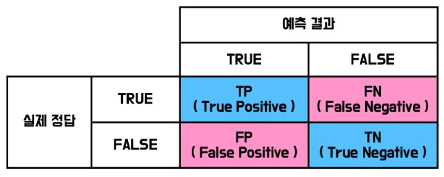
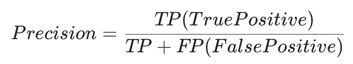
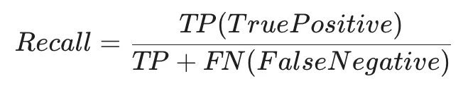
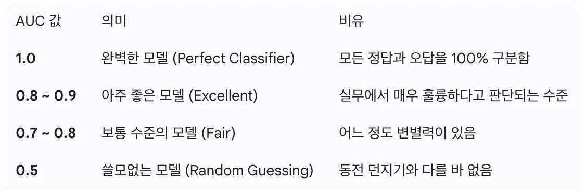

TP
포트홀이라고 예측했고 실제로도 포트홀
Part 4 · Evaluation
같은 모델도 무엇을 더 위험하게 보느냐에 따라 임계값과 우선할 지표가 달라집니다.
Confusion Matrix · S168
Positive를 포트홀이라고 정하면, 모델의 포트홀 판정과 실제 포트홀 여부를 조합해 TP·FP·FN·TN을 셉니다.

포트홀이라고 예측했고 실제로도 포트홀
포트홀이라고 예측했지만 실제로는 정상
정상이라고 예측했지만 실제로는 포트홀
정상이라고 예측했고 실제로도 정상
원본 S168 본문은 FP·TN의 한국어 설명이 도식과 어긋납니다. 이 페이지는 원본 혼동행렬 도식과 표준 정의에 맞춰 바로잡았습니다.
Precision · S169
모델이 Positive라고 예측한 것 중 실제로 Positive인 비율입니다. FP의 피해가 클 때 중요한 지표입니다.

Recall · S170
실제 Positive 중 모델이 Positive라고 맞힌 비율입니다. FN의 비용이나 위험이 매우 클 때 우선합니다.

ROC & AUC · S171
ROC는 임계값을 0부터 1까지 바꾸며 거짓 양성률과 재현률의 변화를 그린 곡선입니다. AUC는 그 곡선 아래 면적으로, 이진 분류 모델의 종합적인 변별력을 나타냅니다.

F1 = 2 × Precision × Recall / (Precision + Recall)
Precision과 Recall 중 한쪽만 높이는 대신 두 지표의 조화를 하나의 값으로 보고 싶을 때 F1을 사용합니다.
Interactive · Widget 06
S179의 포트홀 결과를 기준으로 근사한 사전 계산 데이터입니다. 임계값 0.50에서 TP 432, FP 35, FN 175, TN 355가 정확히 재현됩니다.
Quick Check